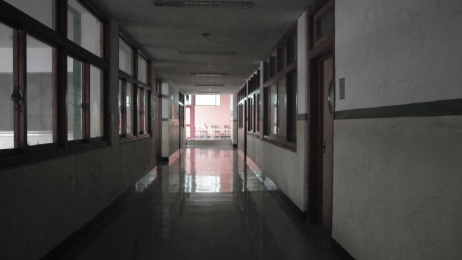
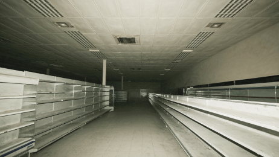
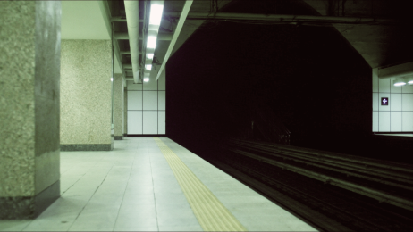

본 프로젝트는 대한민국의 모든 도시공간을 연구 대상으로 삼지 않는다.
인구 변화와 인간의 일상적 공간 이용 사이의 관계를
비교하기 위해 다음과 같은 기준을 설정하였다.
위 세 범주는 결국 각각 연령구조와 공간, 소비·체류수요와
공간, 이동수요와 공간을 비교하기 위해 선택된다.
연구대상을 기능에 따라 EDU · RTL · TRN으로 분류하고, 각 범주 안에서 일상적으로 사람이 머물고 이동하는 세부 장소를 선정하였다. 이를 통해 서로 다른 성격의 공간을 동일한 기준 안에서 비교할 수 있는 아카이브 구조를 구축하였다.
각 공간에 2026년 현재와 2040년 가상 미래라는 두 개의 시간 조건을 부여하였다. 2026년은 사람들이 공간을 일상적으로 사용하고 있는 상태를 기준으로 설정하고, 2040년은 기존의 공간적 구조는 남아 있으나 사람의 존재와 이용밀도가 크게 낮아진 상태로 설정하였다.
선정한 각각의 공간에 대해 생성형 AI를 활용하여 두 시점의 이미지를 제작하였다. 2026년 이미지는 사람이 공간을 사용하고 있는 현재적 상태를 시각적 기준선으로 구성하고, 2040년 이미지는 동일하거나 유사한 공간에서 인간의 활동이 제거되거나 감소한 Kenopsia적 상황으로 재구성하였다.
2040년은 실제 미래에 대한 예측이 아니라, “공간은 남아 있는데 그것을 사용하던 사람들이 줄어든다면 어떻게 보일까?”라는 질문을 시각화한 사고실험이다.
(현재 기반 기록)
(가상적 미래 시나리오)
: 인간 활동 의존성
: 인구구조와의 관련성
: 집단적 이용
: 일상성
Human Dependency
(교육 공간)
EDU
EDU
RTL
TRN
(상업 공간)
RTL
(교통 공간)
TRN
Demographic Relevance
Collective Use
Everyday Familiarity

공간 분류 체계 구축
Step 01. Spatial Taxonomy
Step 01. Spatial Taxonomy
Step 02. Temporal Scenario Setting
Step 03. AI-based Visual Simulation

AI 기반 시각 시뮬레이션
Step 03. AI-based Visual Simulation

Step 02. Temporal Scenario Setting
시간 시나리오 설정
시간 구조와 아카이브 세계관
Present-based Reconstruction
Speculative Visual Scenario
두 시점의 이미지는 단순한 Before & After가 아니라, 2026년의 일상 공간을 기록하여 미래의 열람자에게 전달하는 아카이브라는 세계관으로 연결된다. 이후 이 기록을 아카이빙 북과 영상으로 재구성하여 하나의 시각 아카이브로 완성하였다. 즉, 미래를 예측하기 위한 것이 아니라 가상의 미래를 통해 현재의 평범한 공간을 기록할 가치가 있는 대상으로 다시 바라보게 하는 구조이다.